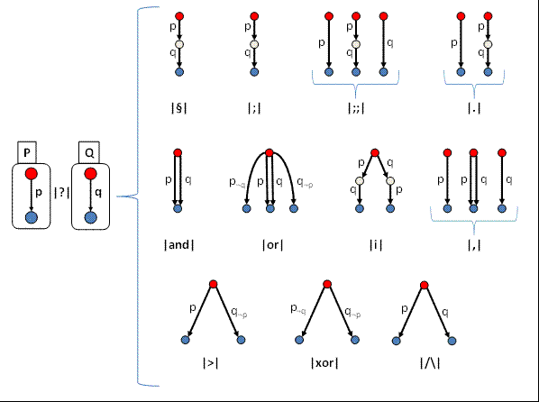

Let P and Q be two processes. We say that a process terminates when it has been totally evaluated (without being interrupted by, for example, the failure of a guarded instruction), and that it fails otherwise.
Using the processes P and Q, the following graph gives an overview of the different schedulings by explaining their theoretical behaviors and the contexts they can explore from the same starting initial context :
There are as many evaluation possibilities as there are red dots (starting states), the blue ones representing the several ECs that are resulting from the application of a MOC on a single red dot and that are retained by Diversity.
For instance, "P |.| Q" can be reduced to P if Q does not terminate, or to P followed by Q. If P does not terminate, "P|.|Q" does not terminate either.
These "order operators" can be put into three categories: sequencing, scheduling and concurrency.
In the picture above :
In the following, we will consider two processes, P and Q to explain the difference between those scheduling operators. We will also apply them on examples in order to have a better understanding.
We will assume that a process finishes :